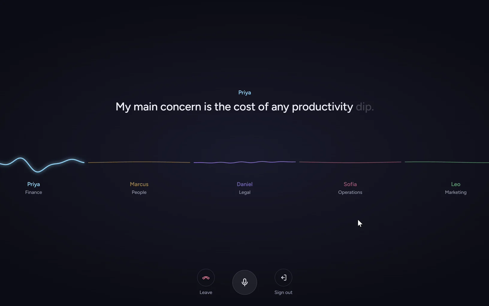
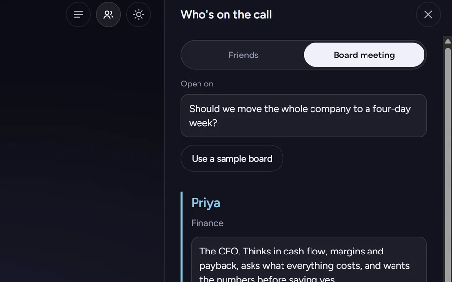
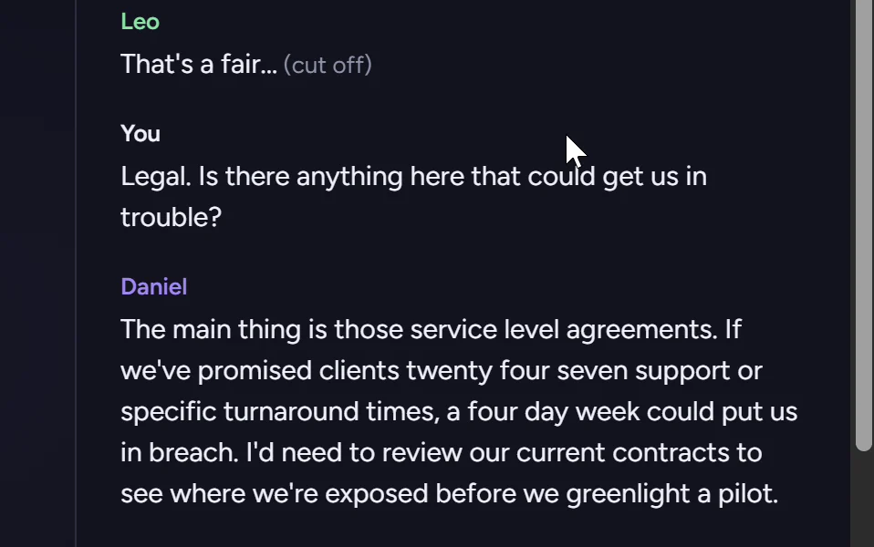
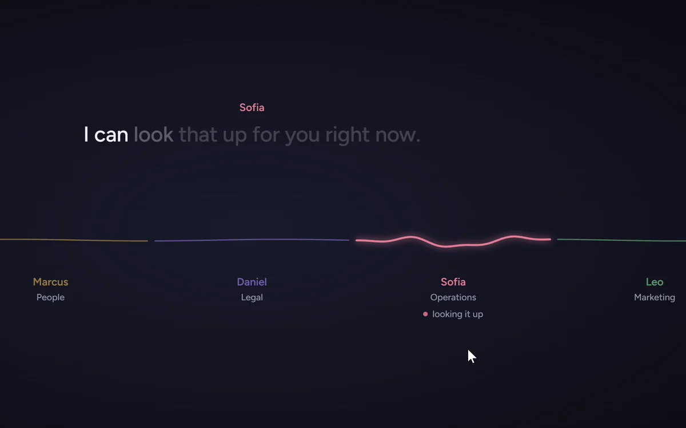
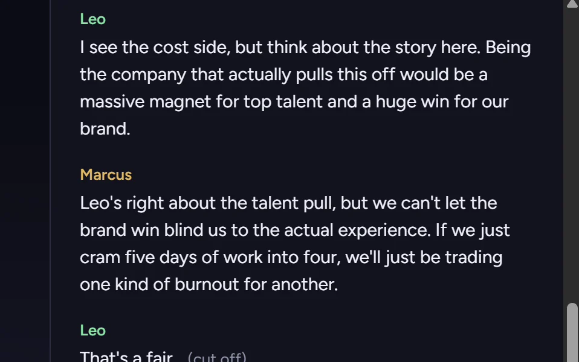
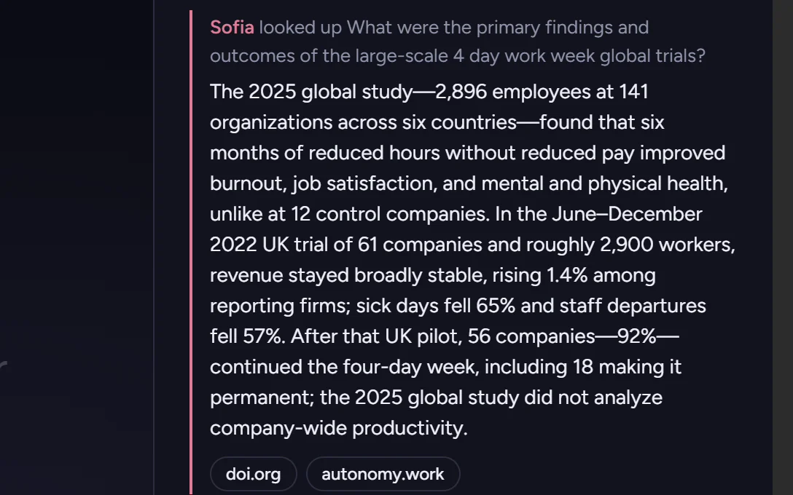
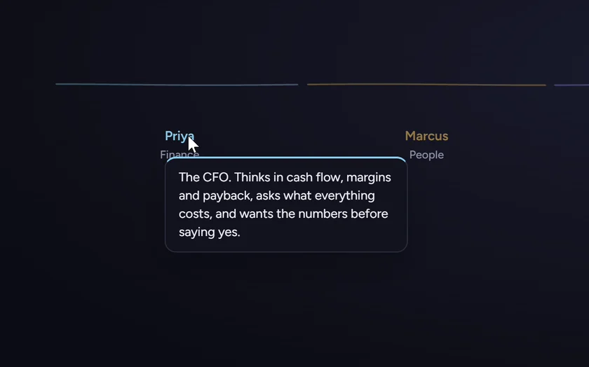
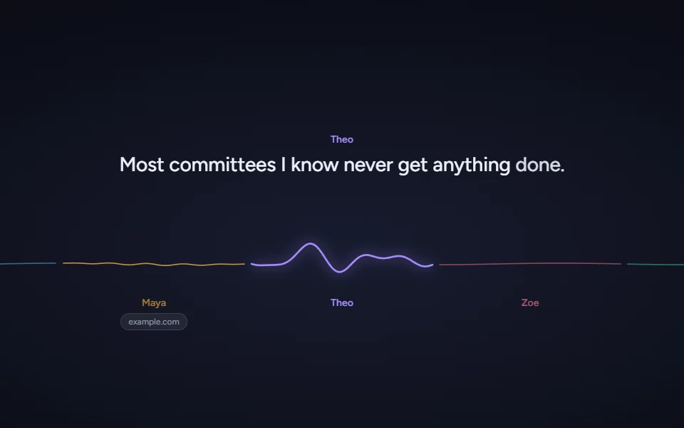

Your own board of AI advisers
Five voices, five roles: finance, people, legal, operations and marketing. Each argues from its own side, and together they work toward a decision.
Five AI voices on one live call. Make them your board of advisers, each with their own role, or five friends talking about anything. They talk to each other, push back and look things up with real sources, and you just speak to join in.
On the table A four-day week
The demo
Five AI advisers argue out a four-day week with the CEO. Nothing is scripted: every line is said live.
Capabilities
Join the call and just talk. Every screen here is from the demo, except the last one, a call between friends.

Five voices, five roles: finance, people, legal, operations and marketing. Each argues from its own side, and together they work toward a decision.

A board meeting or a call between friends, the question to open on, and who the five are: names, roles, personalities and voices.

No button. Start speaking and whoever is talking stops. Say a name, or a role like "Legal", and that person answers you.

When a fact matters, one of them checks the web while the talk carries on.

They agree, push back and build on each other, and now and then one cuts in on another.

The full transcript, with what each lookup found and where it came from.

Hover a name to see who they are. Twelve voices to pick from, each with a sample.

Switch to friends and they talk about anything, then change the subject on their own.
A CEO could have a board of AI advisers on call, finance, HR, legal and more, each with its own expertise, arguing a decision through before the real meeting. Paradox is a small, working showcase of that idea.

Full-stack engineer building voice AI, Vancouver
I built Paradox on my own, in my own time, on the Alebex voice engine, using only its public developer docs and APIs. The repo has the full story: how it works and the hard parts. Before Paradox, I built Bex, a voice AI that builds other voice AIs, live.